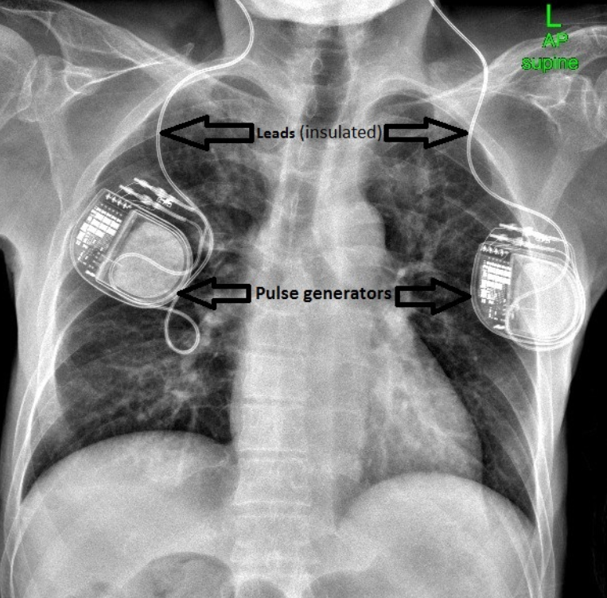
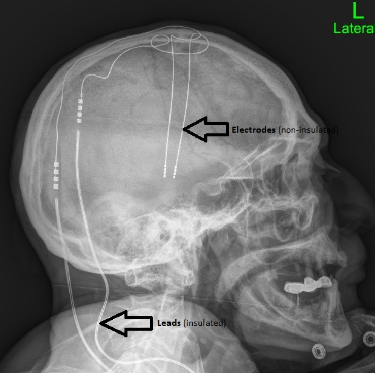

Deep Brain Stimulation:
The Brain Pacemaker
Deep Brain Stimulation (DBS) is a neurosurgical intervention that delivers controlled electrical impulses to targeted deep brain structures. By overriding abnormal neural activity, DBS helps restore normal communication within disrupted brain circuits.
Guiding Research Questions
- Question 1: How do cellular firing imbalances in specific deep brain nuclei (structure) disrupt normal motor, cognitive, and electrical pathways (function)?
- Question 2: In what ways do high-frequency electrical pulses delivered by DBS regulate or override hypersynchronized pathological brain waves?
- Question 3: What are the primary clinical benefits, technical limitations, and physiological risks associated with chronic neurostimulation?
What is DBS?
A surgically implanted medical system consisting of an electrical pulse generator (battery), extension cables, and thin electrode leads targeted at deep brain centers.
Signal Jamming
DBS delivers continuous high-frequency electrical pulses that interrupt and override chaotic or over-synchronized pathological noise within neural circuits.
Adjustable & Reversible
DBS does not permanently destroy brain tissue. External programmers allow clinicians to fine-tune voltage and pulse frequency, or turn off stimulation completely.
Hardware Component Breakdown
Implantable Pulse Generator (IPG) & Extension Wires
A titanium-encased, battery-powered computer surgically placed beneath the collarbone that generates customizable electrical pulses. Insulated extension wiring tunnels under the skin of the neck and scalp to securely bridge the IPG battery to the deep brain leads.

Chest X-ray showing implanted Pulse Generators and insulated extension leads
Deep Brain Electrodes
Hair-thin polyurethane leads featuring microscopic platinum-iridium contact points inserted precisely into target subcortical nuclei.

Deep Brain Electrodes and Lead Placement